<footer class="site-footer">

  <div class="wrapper">
    <p class="text">{{ site.description }}</p>

    <ul class="social-media-list">

          {% if site.twitter_username %}
          <li>
            <a target="_blank" href="https://twitter.com/{{ site.twitter_username }}">
              <span class="icon  icon--twitter">
                
              </span>
              <span class="visually-hidden" aria-hidden="true">{{ site.twitter_username }}</span>
            </a>
          </li>
          {% endif %}
          {% if site.facebook_username %}
          <li>
            <a target="_blank" href="https://facebook.com/{{ site.facebook_username }}">
              <span class="icon  icon--facebook">
                
              </span>
              <span class="visually-hidden" aria-hidden="true">{{ site.facebook_username }}</span>
            </a>
          </li>
          {% endif %}
          {% if site.linkedin_username %}
          <li>
            <a target="_blank" href="https://linkedin.com/company/{{ site.linkedin_username }}">
              <span class="icon  icon--linkedin">
                
              </span>
              <span class="visually-hidden" aria-hidden="true">{{ site.linkedin_username }}</span>
            </a>
          </li>
          {% endif %}
          {% if site.youtube_username %}
          <li>
            <a target="_blank" href="https://youtube.com/{{ site.youtube_username }}">
              <span class="icon  icon--facebook">
                
              </span>
              <span class="visually-hidden" aria-hidden="true">{{ site.youtube_username }}</span>
            </a>
          </li>
          {% endif %}
      </ul>


    <small>Skyscanner 2002-2015</small>

  </div>
</footer>

<script src="{{ site.baseurl }}/src/responsive-nav.min.js" type="text/javascript"></script>

<script>
    var nav = responsiveNav(".nav-collapse", {customToggle: "navigation-toggle",navActiveClass: "js-nav-active"});
</script>

<script src="{{ site.baseurl }}/bower_components/simple-jekyll-search/dest/jekyll-search.js" type="text/javascript"></script>

<script type="text/javascript">
  SimpleJekyllSearch({
    searchInput: document.getElementById('search-input'),
    resultsContainer: document.getElementById('results-container'),
    json: '{{ site.baseurl }}/search.json',
    searchResultTemplate: '<li><a href="{url}" title="{desc}">{title}</a></li>',
    noResultsText: 'No results found',
    limit: 10,
    fuzzy: false,
    exclude: ['Welcome']
  })
</script>
